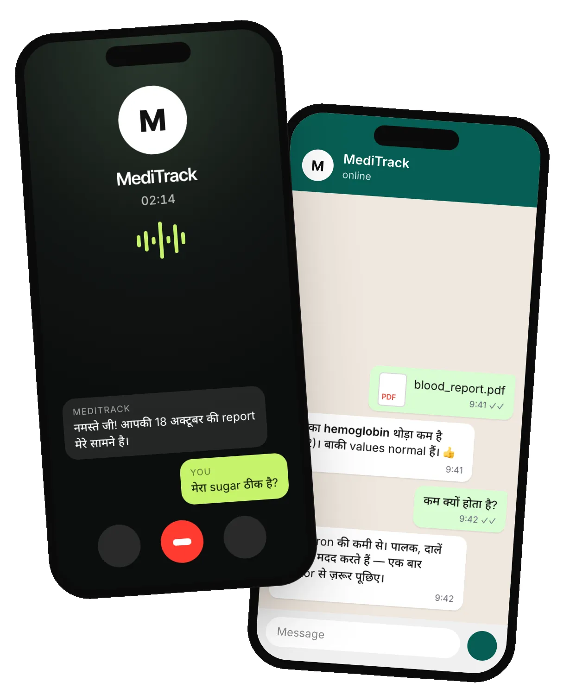
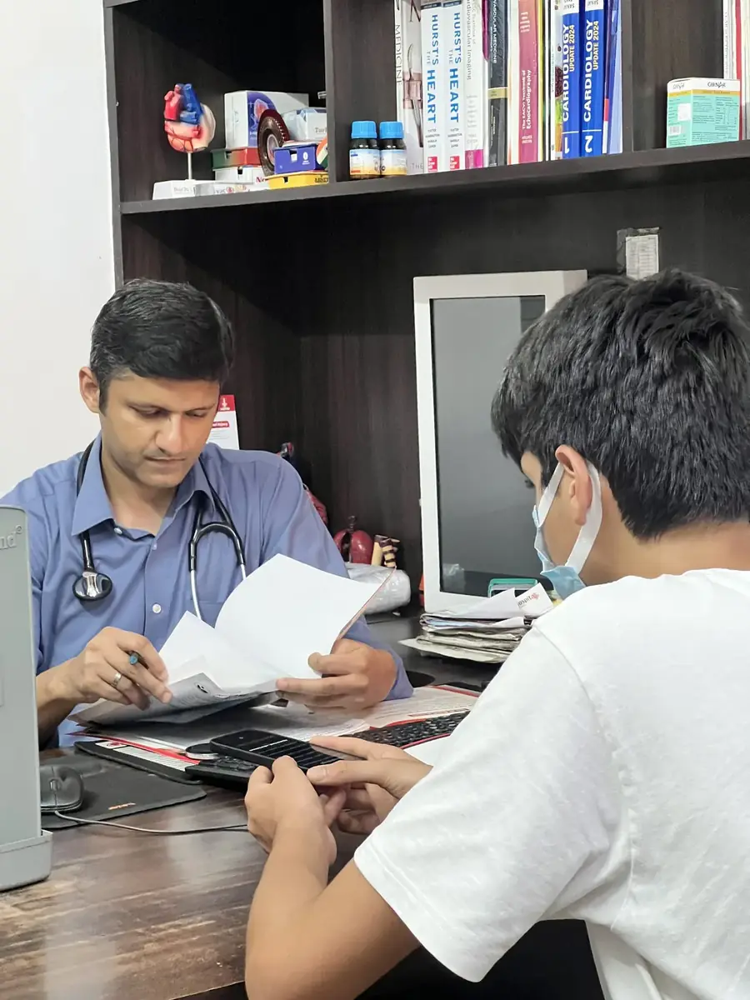

MediTrack
Founder & developer
Lab reports explained by phone call, WhatsApp or web, in 5 Indian languages and Hinglish.

1,500+People with a report explained
3Hospitals using it
+35%Understanding
- Built
- Reads any Indian lab report, flags what’s off, says when to see a doctor.
- Hard part
- Explaining without diagnosing, for people who mix Hindi and English.
- Results
- CREST Gold. Blue Ocean Top 500 of 23,000+. Recognised by Uttar Pradesh’s Directorate of Training.
